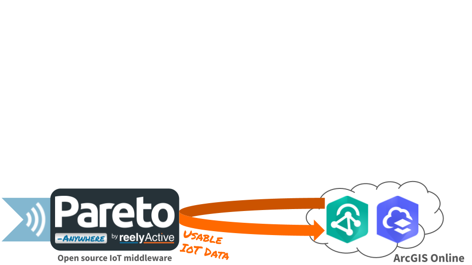

ArcGIS Velocity
Configure ArcGIS Velocity to ingest real-time location data from Pareto Anywhere.
The TL;DR (Too Long; Didn't Read)
Learn how to consume RTLS data from Pareto Anywhere in ArcGIS Online.
- What's Pareto Anywhere?
- Pareto Anywhere is open source IoT middleware that makes the data from just about anything usable.
- What's ArcGIS Velocity?
- ArcGIS Velocity is a cloud-native add-on capability for ArcGIS Online which can ingest data from IoT platforms like Pareto Anywhere.
- RTLS in GIS?
- Yes! Real-time location systems (RTLS) and geographic information systems (GIS) have indeed "found" one another, making a powerful duo.
Prerequisites
ArcGIS Online and ArcGIS Velocity.
-
ArcGIS Velocity
Obtain a licensed instance from Esri.
Preparing associations Step 1 of 3
Associate positions with infrastructure and tags with things to be located.
- What are associations?
- Associations are metadata properties ( url, tags, directory & position) that can be assigned to any identifiable device.
- Why make associations?
- Associate positions to facilitate real-time location of devices. Associate tags to facilitate querying specific groupings of devices.
Associate positions Part 1
A position can be 2D or 3D (using altitude or floor/level). Each element must be numerical.
In order to estimate the real-time location of wireless devices, the position of fixed receiver infrastructure (i.e. gateways, APs, readers) must be known.
It is possible to associate a position with any identifiable device via graphical user interface in Pareto Anywhere Apps (Devices Observer & Hyperlocal Context Explorer):
- Select the device by its node or identifier
- Select the Associations tab from the bar that appears, as in the screenshot
- Enter the device position as longitude, latitude, altitude
- Click Save to complete the position association
Repeat this process to associate a position with each fixed receiver.
Alternatively, associate positions programmatically using the /associations API:
PUT /associations/{id}/{type}/position*
* See /reelyactive/chickadee
Observe spatem data Part 2
A spatem is a JSON representation of spatial temporal data in relation to a specific device.
Browse to the Hello Spatem! web app in Pareto Anywhere Apps to confirm that real-time location data is observed. This validates that the positioning engine* is able to estimate the location of devices based on the position associations completed in Part 1.
* See /reelyactive/chimps
Associate tags Part 3
A tag is any combination of characters, like a word. Tags are encoded as an Array of Strings.
In order to group devices of interest (ex: asset classes, teams of personnel) to be located in ArcGIS, it is customary to associate each device with a common tag.
It is possible to associate tags with any identifiable device via graphical user interface in Pareto Anywhere Apps (Devices Observer & Hyperlocal Context Explorer):
- Select the device by its node or identifier
- Select the Associations tab from the bar that appears, as in the screenshot
- Enter the device tag(s) as tag1, tag2, ...
- Click Save to complete the tags association
Repeat this process to associate one or more tags with each device to be located.
Alternatively, associate tags programmatically using the /associations API:
PUT /associations/{id}/{type}/tags*
* See /reelyactive/chickadee
Validate API route Part 4
ArcGIS Velocity can interpret GeoJSON, which Pareto Anywhere can extract from spatem data.
It is now possible to make a single API call to return, as GeoJSON, the real-time location of all devices, or a group of devices associated with a given tag.
The /context API supports the query ?format=geojson to structure the response as GeoJSON. Browse to:
/context/?format=geojson
to query the real-time location of all devices.
To instead query the real-time location of devices with the "owl" tag, browse to:
/context/tag/owl/?format=geojson&depth=1
The depth=1 parameter limits the response to the queried devices, omitting any receiving devices (which represent the next level of depth in the hyperlocal context graph).
For example, if Pareto Anywhere is hosted on 127.0.0.1 and every owl is to be located, the full URL would be:
http://127.0.0.1:3001/context/tag/owl/?format=geojson&depth=1
Validate the API route which provides the real-time location of exactly the devices required by the application. ArcGIS Velocity will poll the URL, which is covered next in Step 2.
Configuring ArcGIS Velocity Step 2 of 3
Configure a HTTP poller and confirm the data schema.
- What's HTTP polling?
- This is a method of retrieving data by periodically GETing a specific API route.
- What's the schema?
- The API returns a standard GeoJSON FeatureCollection, augmented with device identifiers in each feature's properties.
Configure HTTP poller Part 1
In ArcGIS Velocity, configure a HTTP poller with the URL of the API route validated in Step 1, Part 4 above. Select the GET method.
Confirm schema Part 2
In ArcGIS Velocity, confirm the schema of the data returned by the API, using the following configuration:
| Data format | JSON |
|---|---|
| Root node | features |
| Flatten | |
| Flatten arrays |
Rename, for clarity, any fields that will be used when manipulating and visualising the data (ex: deviceId, deviceIdType, x, y, z). Note that the Z-axis should be of type Float64 unless using integer-only floor/level values.
Identify key fields Part 3
In ArcGIS Velocity, identify key fields as follows:
| Location type | X/Y fields |
|---|---|
| X (longitude) | x |
| Y (latitude) | y |
| Z (altitude) | z (or None) |
| Spatial reference | GCS WGS 1984 |
| Track ID | deviceId |
Set polling interval Part 4
In ArcGIS Velocity set the polling interval to an appropriate value for the application.
ArcGIS Velocity may limit the frequency/quantity of allowed ingestion based on the license type.
Save feed Part 5
In ArcGIS Velocity, save the feed with a meaningful name (ex: related to the API tag value).
Using ArcGIS Online Step 3 of 3
Put the RTLS data to good use on the map.
- Question?
- Answer.
- Question?
- Answer.
Details to come...


Tutorial prepared with ♥ by jeffyactive.
You can reelyActive's open source efforts directly by contributing code & docs, collectively by sharing across your network, and commercially through our packages.Where to next?
Continue exploring our open architecture and all its applications.
-

-
Directory of Devices
Browse all device configuration tutorials and development guides.
-

-
reelyActive Developers
Browse all developer documentation and tutorials.
-

-
reelyActive
Together, let's make sense of things.